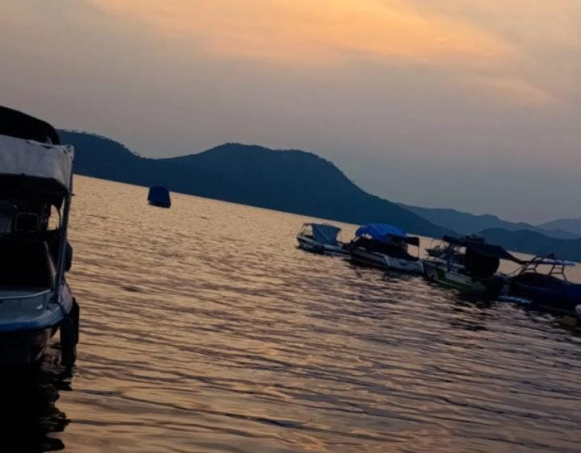
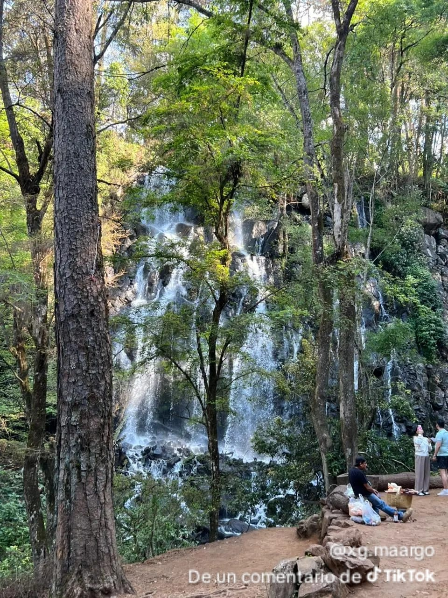
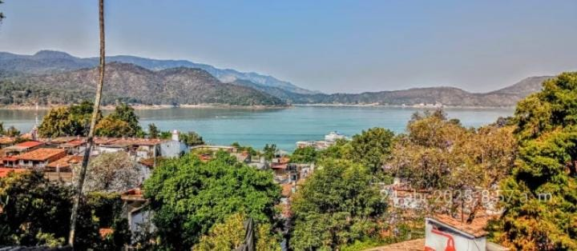
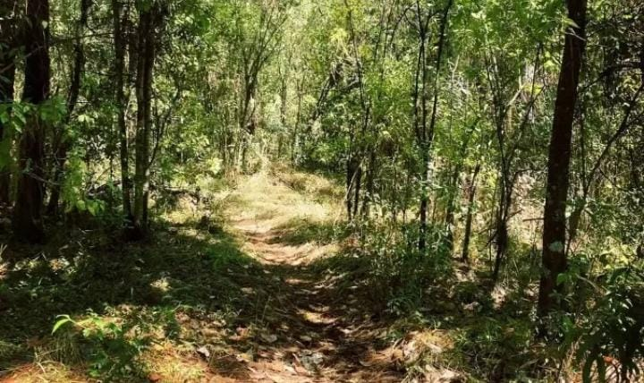
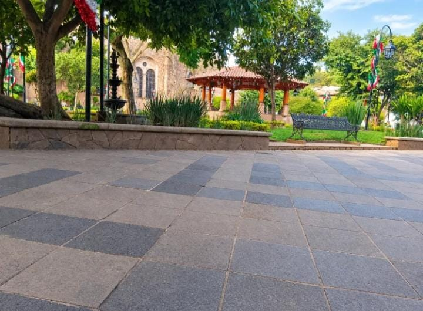
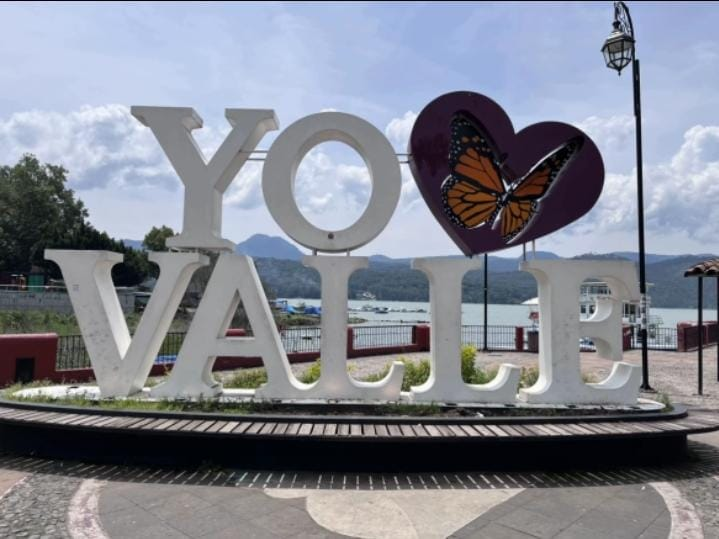

TURISMO VALLE DE BRAVO
Lugares de turismo en nuestro pueblito mágico

Embarcadero de Valle de Bravo
“El Embarcadero de Valle de Bravo es uno de los lugares turísticos más representativos de este Pueblo Mágico. Se encuentra a orillas del lago de Valle de Bravo y es uno de los principales puntos de salida para realizar paseos en lancha y disfrutar del paisaje.” Es un sitio ideal para convivir con familiares y amigos, tomar fotografías y conocer el lago desde otra perspectiva

Velo de Novia
"La Cascada Velo de Novia es uno de los atractivos naturales más famosos de Valle de Bravo. Se encuentra en la zona de Avándaro y es reconocida por su hermosa caída de agua, rodeada de árboles, vegetación y paisajes boscosos."

Torre Valle de Bravo
"Conocida como Torre del Guardabosque o Mirador La Torre, es un atractivo turístico natural ubicado dentro de la Reserva Estatal Monte Alto, en el municipio de Valle de Bravo, Estado de México."

Cerro Colorado
“un sitio natural ubicado en el municipio de Valle de Bravo. Se caracteriza por su vegetación boscosa, sus paisajes montañosos y su importancia ambiental. Es un lugar de interés para las personas que disfrutan del contacto con la naturaleza, las caminatas y las actividades al aire libre.”

Kiosco del Centro de Valle de Bravo
“El quiosco tiene una gran importancia porque representa las costumbres y la identidad de Valle de Bravo. También es un atractivo turístico que permite conocer la vida cotidiana de sus habitantes. En sus alrededores se realizan actividades de convivencia y eventos culturales que ayudan a conservar las tradiciones del municipio.”

Yo Amo Valle
“Uno de los atractivos turísticos y puntos fotográficos más conocidos de Valle de Bravo. Consiste en un letrero con letras grandes que forman la frase «YO AMO VALLE», donde los visitantes pueden tomarse fotografías para recordar su visita a este Pueblo Mágico."